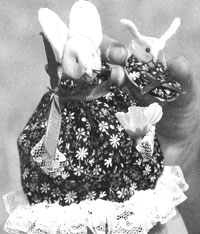
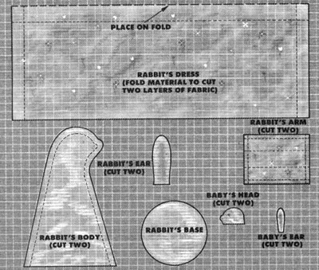
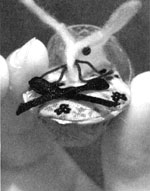

Mother's Children
It's fun to sew your own stuffed bunnies.
I decided to try to make miniature rabbits after seeing various small stuffed animals at craft sales. I borrowed some ideas from what I'd seen, added some of my own, and came up with designs for mother and baby rabbits.
When I first started making them, I gave them as gifts to friends and relatives. They liked the rabbits so much I decided to try selling them. So far I've sold about 16 sets for $6.50 each. I figured out it costs about $1 to make each set. So all together I've earned about $88. I've also taught my cousin to make them, and she has sold as many sets as I have.
It takes me about two and a half hours to make each pair of bunnies. Whenever possible I try to recycle materials. The cotton I use comes from vitamin bottles. The baby rabbit's bed is half of a walnut shell. And I buy my small scraps of fabrics, and odds and ends of ribbons and lace, at garage sales and swap meets for almost nothing.
If you decide to make these rabbits, you'll find that it's hard work, and you'll probably make some mistakes at first. (You may want to ask an adult to help you understand the sewing instructions.) But the results are rewarding. I've done well selling miniature rabbits, and I think you can, too.
Materials: Unbleached muslin, fabric with a miniature print, white felt, 1/4" and 1/8" ribbon, pregathered lace (or you can gather it yourself), black seed beads, walnut shell halves, heavy black thread (for whiskers), miniature flowers, pink crayon, cotton (for stuffing).
Body: Draw the pattern-to scale-on 1/4" graph paper. Label the pieces and cut them out. Using a pencil, trace the rabbit body twice onto muslin. Cut the pieces out, and pin them right sides together. Stitch the two body pieces together 3/16" in from the edge, but leave the bottom open. Turn the body inside (right side) out. Mark the locations of the eyes and nose. Stuff the rabbit with cotton. Cut the circular base from felt, and, tucking under the raw edges of the muslin, stitch it to the bottom of the rabbit.
Cut two felt ears and slipstitch them to the head. Sew black seed-bead eyes on. As you push the needle through the head, pull the thread a bit tight to indent the eye area. Sew heavy, doubled black thread through the nose: Push the needle through the stuffing, bring it around and push it through the same place again, this time pulling a little to point the nose. Clip the ends to make whiskers. Apply some color to the nose, ears, and cheeks with a pink crayon.
Dress: Fold the printed fabric right sides together, and pin the dress pattern along the fold as indicated. Cut it out, and-still with the wrong sides out-stitch the sides together with 3/8" seams. Turn right sides out, press, and trim the bottom raw edges with lace. Run a basting stitch 1/2" in from the top, and pull it to make gathers to fit the rabbit's neck. Tack the dress to the rabbit in a couple of places.
Cut two sleeve pieces. Press all their raw edges in 1/8" with an iron. Then fold each sleeve-right side out-in three (like a letter about to be mailed), and slipstitch closed. Trim the bottom edge with lace. Tack the top of each sleeve to the dress at the rabbit's shoulders. Bend the sleeves a bit and tack the lace to look like hands. For a cheer ful note, attach a flower to one of the hands.
With 1/4 " ribbon, tie a bow around the rabbit's neck over the gathers. Make another bow from 1/4" ribbon, and tack it to the dress at the center back, right above the lace.
Baby: From fabric that matches the mother's dress, cut a piece a little larger than the opening of your walnut shell. Stuff the walnut half with cotton. Fold under all the raw edges of the fabric, and glue the pieces to the walnut.
Cut two baby's head pieces from felt. Glue the front half of the baby's face together, but leave the back half open. Sew on heavy thread whiskers. Spread open the back of the head and glue it to one end of the walnut. Glue on black bead eyes. Cut and glue on ears. Make a small bow from 1/8" ribbon, and glue it to the walnut at the opposite end from the head. Gather lace for the baby's bonnet, sew its ends together to make a circle, and glue it to the walnut behind the baby's head.
|
 Even discarded scraps of material can be put to good use if you're resourceful and use your imagination. |
 |
 |